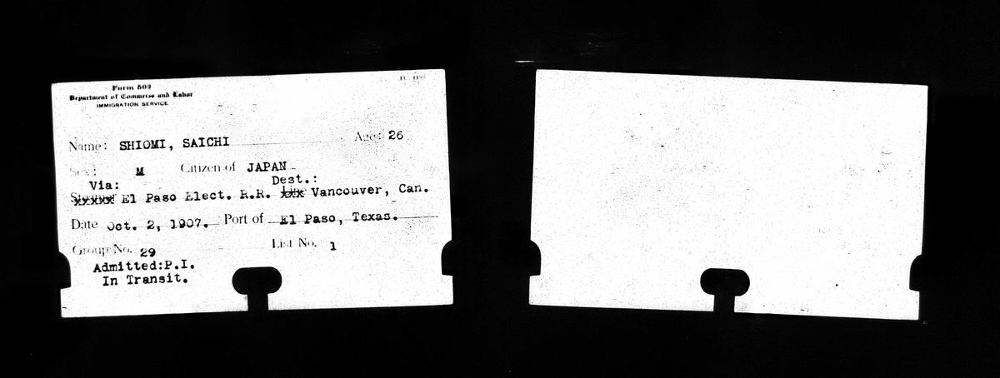
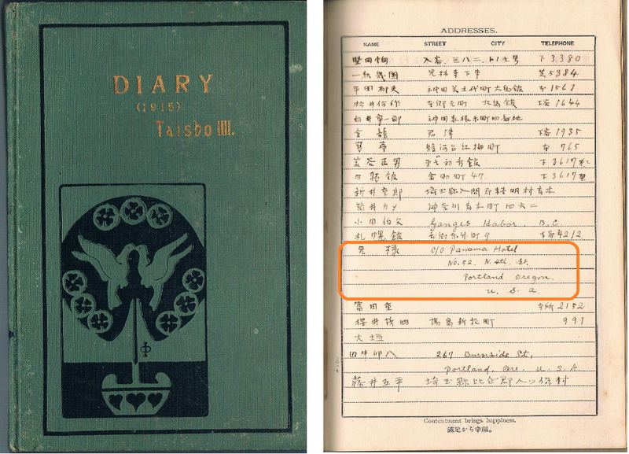
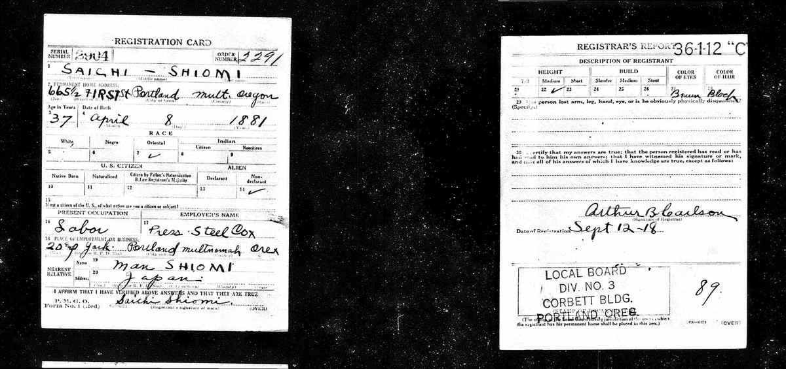
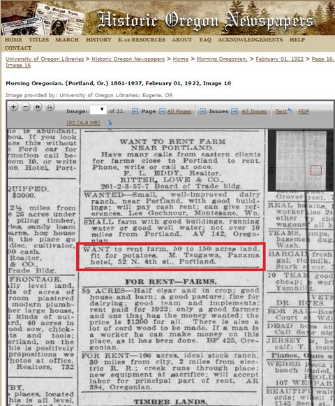

アメリカ日系一世 ロバート汐見の足跡（1）
父、佐市の渡米
ロバート・ハジメ・汐見の父、汐見佐市は1881年（明治14年）、愛媛県越智郡佐島村（現上島町）に生まれた。戸籍謄本を見ると佐市は6歳で家督を相続しており、その父才吉は早逝したものと思われる。母ハナは女手一つで佐市と甚作の兄弟2人を育て、91歳の天寿を全うした。米寿祝いの石塔が八幡神社に奉納されている。佐市は23歳で三原市御調町出身の山田マンと結婚した。島の古老によれば、マンは三原から行商に佐島を訪れて佐市に見初められたと言う。

1907年10月2日、佐市は妻子を日本に残しメキシコ経由でアメリカに入国した。佐市26歳、マン24歳、一郎6歳、次男一（はじめ）3歳の時である。いわゆる移民県の一つである広島に近いため、佐島を含む瀬戸内の島嶼部からの移民は当時珍しくなかった。（但し、16歳で最初の渡米をしたと思われる資料も見つかり、確認中）
日本からアメリカ本土への移民は1900年に年間1万人を超え軋轢も起こったため移民の制限が始まっており、1907年当時は西海岸からの入国が難しくなっていた。このためカナダやメキシコ回りでアメリカを目指す移民が増え、佐市もそれに倣ったものと思われる。メキシコの港は不明だが、バンクーバー行きの電車にのり、テキサス州のエルパソで入国した際の入国票が米国のアーカイブより発見された（写真1）。
当時、佐島からは鮭缶詰工場で栄えたバンクーバー郊外のスティーブストン*1に移住した家族などもおり、同郷の者と途中で別れたのかもしれない。
佐市がどのような経緯で日本人の少ないポートランドに落ち着いたのかは不明だが、汐見の家の納屋に残されていた、佐市の弟甚作のものと思われる1917年付の日記帳のアドレス欄に「兄様 c/o Panama Hotel No.52 N. 4 th st. Portland, Oregon U.S.A.」とあり、寄宿先が明らかになった。（写真2） パナマホテルと言えばシアトルにある同名のホテルが有名だが、系列ホテルがポートランドにもあった様である*2。

ポートランドにおける日本人出稼ぎ労働者は、当初鉄道工事や農作業に従事する場合が多かったが、1918年9月12日付の徴兵登録票にはPress Steel Box社の従業員（Labor）とあり（写真3）、1920年に実施された国勢調査では「Machinery Shop」における「Laborer」とある。

佐市は1918年（大正7年）に次男の一を迎え、1920年代に日本に戻ったと思われる。帰国後は一切働かず、本などを読んで過ごしたと言う。納戸に残されている英語の小説などは佐市の蔵書だったのであろうか。離島の古民家の納屋から古いハードカバーの洋書が何冊も出て来たのには驚かされた。
佐市は90歳の1971年（昭和46年）1月20日に逝去した。私自身は曽祖父と3歳の頃に一度会ったきり、縁側に座っていた着物姿の老人の面影がおぼろに残るのみである。
*1 スティーブストン
参考書籍：｢ステブストン物語―世界のなかの日本人｣ 鶴見和子著 中央公論社 1962年
また、この頃のバンクーバーにおける日系移民の暮らしぶりは2014年に「バンクーバーの朝日」(石井裕也監督)として映画化された。
*2 パナマホテル
当時日本の独身男性が定宿としており、地下１Fには日本式の銭湯「橋立湯」があった。今も当時のままの姿が残され1Fでカフェの営業が続けられている。2015年4月、米ナショナルトラストによりNational Treasureとして認定された。
http://www.preservationnation.org/who-we-are/press-center/press-releases/2015/panama-hotel.html
参考書籍：｢あの日、パナマホテルで｣ Jamie Ford 著、前田 一平訳 集英社 2011年
全米110万部のベストセラー。2010年アジア・太平洋文学賞受賞。
尚、ポートランドのパナマホテルも同じような宿だったと思われる。1922年2月1日付の地元紙Morning Oregonianに、日系人と思われるM.Tsugawa氏が、ポテトの栽培に適した農地50-150エーカーの賃借を求める広告が載っている。（写真4） 日雇い農夫として働きながら自営用の農地を探していたのだろう。パナマホテルは連絡窓口だったのかもしれない。津川氏のその後も興味深い。
